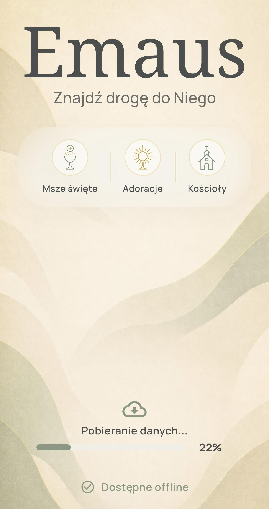
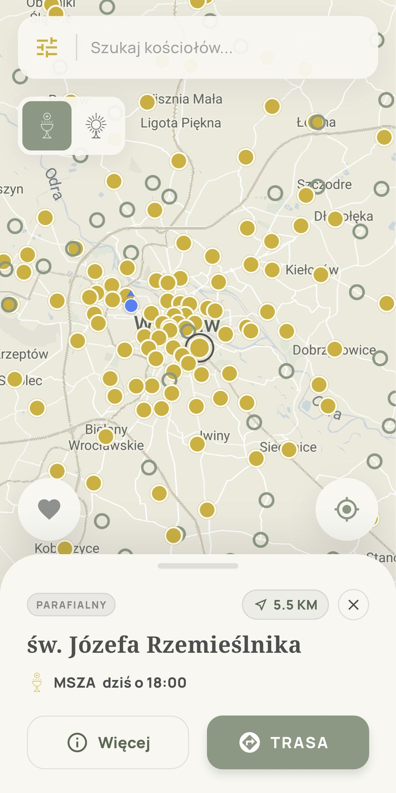
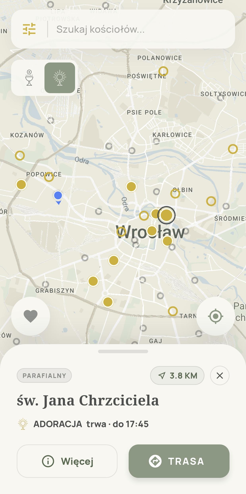
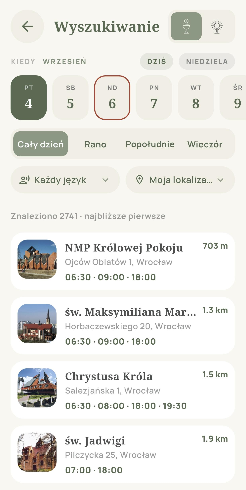
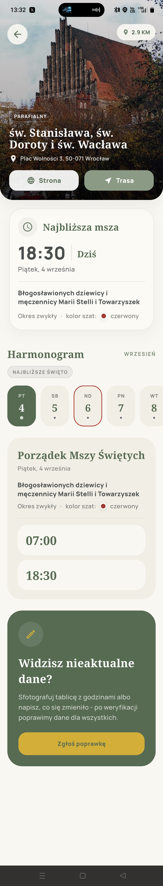
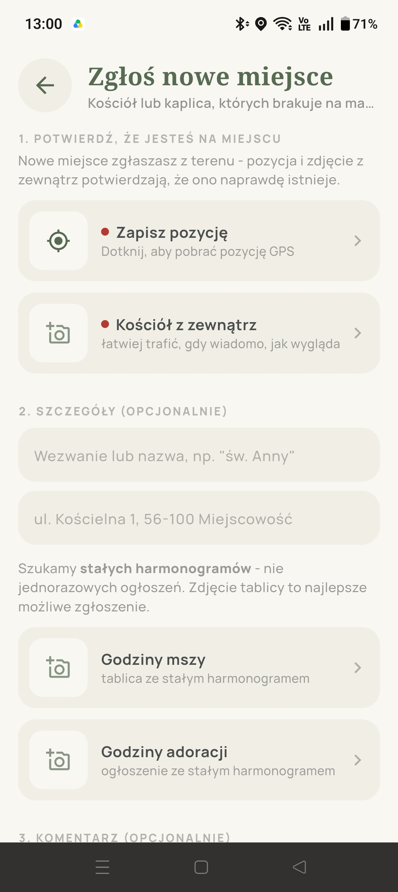

Emaus
Znajdź drogę do Niego
Znajdź godziny Mszy Świętych i adoracji. Sprawdź kościoły w swojej okolicy lub tam, dokąd się wybierasz.

Znajdź Mszę w swojej okolicy
Zobacz, gdzie możesz jeszcze dziś pójść na Mszę, i sprawdź najbliższą godzinę. Wybierz kościół, żeby poznać szczegóły i sprawdzić, jak do niego dotrzeć.
- Msza jeszcze dziś
- Sprawdź kolejne dni

Znajdź czas na adorację
Sprawdź, gdzie możesz przyjść na adorację teraz lub później. Przełącz mapę na tryb adoracji, żeby zobaczyć miejsca i ich godziny.
- Adoracja trwa
- Adoracja później dziś
- Adoracja wieczysta

Znajdź Mszę o dogodnej porze
Szukasz Mszy wieczorem albo w innym języku? Wybierz dzień, porę i język, a zobaczysz pasujące Msze w kolejności od najbliższych miejsc.

Sprawdź godziny i liturgię na wybrany dzień
Wybierz dzień, żeby zobaczyć godziny Mszy w danym kościele. Sprawdzisz też, jakie święto lub wspomnienie przypada tego dnia oraz jaki jest okres liturgiczny i kolor szat.

Wspólnie tworzymy coraz pełniejszą mapę
Społeczność Emaus pomaga uzupełniać mapę o nowe kościoły i kaplice oraz aktualizować godziny Mszy i adoracji. Każde zgłoszenie jest weryfikowane, a zatwierdzone informacje służą wszystkim.

Mapa rośnie razem z nami
- kościołów i kaplic na mapie
- 5 047
- zapisanych godzin Mszy
- 20 869
- miejsc z adoracją
- 375
Około 28% parafii w Polsce już na mapie
2 884 z około 10 350 parafiiStan bazy: 5 września 2026. Liczba parafii w Polsce: 10 352 — dane ISKK za 2024 rok.